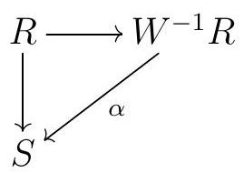
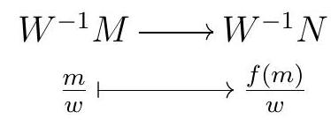
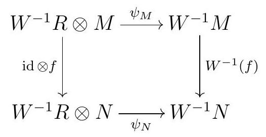
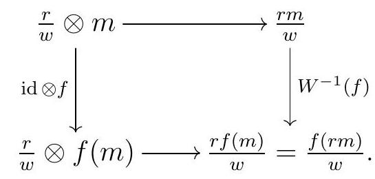

Section 3.3 Localization
Recall that a multiplicatively closed subset of a \(\operatorname{ring} R\) is a set \(W \ni 1\) that is closed for products. The three most important classes of multiplicatively closed sets are the following:
Example 3.66.
Example 3.50. Let \(R\) be a commutative ring.
For any \(f \in R\text{,}\) the set \(W=\left\{1, f, f^{2}, f^{3}, \ldots\right\}\) is a multiplicatively closed set.
If \(P \subseteq R\) is a prime ideal, the set \(W=R \backslash P\) is multiplicatively closed: this is an immediate translation of the definition.
An element that is not a zerodivisor is called a nonzerodivisor or regular element. The set of regular elements in \(R\) forms a multiplicatively closed subset. When \(R\) is a domain, this set is precisely the set of all nonzero elements \(R \backslash\{0\}\text{.}\)
Definition 3.67.
Definition 3.51 (Localization of a ring). Let \(R\) be a commutative ring, and \(W\) be a multiplicative set with \(0 \notin W\text{.}\) The localization of \(R\) at \(W\) is a ring, denoted by \(W^{-1} R\) or \(R_{W}\text{,}\) given by where \(\sim\) is the equivalence relation
\begin{equation*}
\frac{r}{w} \sim \frac{r^{\prime}}{w^{\prime}} \text { if there exists } u \in W \text { such that } u\left(r w^{\prime}-r^{\prime} w\right)=0
\end{equation*}
The operations are given by
\begin{equation*}
\frac{r}{v}+\frac{s}{w}=\frac{r w+s v}{v w} \quad \text { and } \quad \frac{r}{v} \frac{s}{w}=\frac{r s}{v w}
\end{equation*}
The zero in \(W^{-1} R\) is \(\frac{0}{1}\) and the multiplcative identity is \(\frac{1}{1}\text{.}\) There is a canonical ring homomorphism
\begin{equation*}
\begin{aligned}
& R \longrightarrow W^{-1} R \\
& r \longmapsto \frac{r}{1}
\end{aligned}
\end{equation*}
Note that we write elements in \(W^{-1} R\) in the form \(\frac{r}{w}\) even though they are equivalence classes of such expressions.
Let \(M\) be an \(R\)-module. The localization of \(M\) at \(W\) is the \(W^{-1} R\)-module \(W^{-1} M\) or \(M_{W}\) given by
\begin{equation*}
W^{-1} M:=\left\{\frac{m}{w} \mid m \in M, w \in W\right\} / \sim
\end{equation*}
where \(\sim\) is the equivalence relation \(\frac{m}{w} \sim \frac{m^{\prime}}{w^{\prime}}\) if \(u\left(m w^{\prime}-m^{\prime} w\right)=0\) for some \(u \in W\text{.}\) The operations are given by
\begin{equation*}
\frac{m}{v}+\frac{n}{w}=\frac{m w+n v}{v w} \quad \text { and } \quad \frac{r}{v} \frac{m}{w}=\frac{r m}{v w}
\end{equation*}
The zero in the module \(W^{-1} M\) is given by \(\frac{0}{1}\text{.}\)
Here are the most important examples of localizations you will come across in commutative algebra.
Example 3.68.
Example 3.52 (Most important localizations). Let \(R\) be a commutative ring.
For \(f \in R\) and \(W=\left\{1, f, f^{2}, f^{3}, \ldots\right\}=\left\{f^{n} \mid n \geqslant 0\right\}\text{,}\) we usually write \(R_{f}\) for \(W^{-1} R\text{.}\)
When \(W\) is the set of nonzerodivisors on \(R\text{,}\) we call \(W^{-1} R\) the total ring of fractions of \(R\text{.}\) When \(R\) is a domain, this is just the fraction field of \(R\text{,}\) and in this case this coincides with the localization at the prime \((0)\text{,}\) as described below.
For a prime ideal \(P\) in \(R\text{,}\) we generally write \(R_{P}\) for \((R \backslash P)^{-1} R\text{,}\) and call it the localization of \(R\) at \(P\text{.}\) Given an ideal \(I\) in \(R\text{,}\) we sometimes write \(I_{P}\) to refer to \(I R_{P}\text{,}\) the image of \(I\) via the canonical map \(R \rightarrow R_{P}\text{.}\) Notice that when we localize at a prime \(P\text{,}\) the resulting ring is a local ring \(\left(R_{P}, P_{P}\right)\text{.}\) We can think of the process of localization at \(P\) as zooming in at the prime \(P\text{.}\) Many properties of an ideal \(I\) can be checked locally, by checking them for \(I R_{P}\) for each prime \(P \in V(I)\text{.}\)
If \(R\) is not a domain, the canonical map \(R \rightarrow W^{-1} R\) is not necessarily injective.
Example 3.70.
Example 3.54. Consider \(R=k[x, y] /(x y)\text{.}\) The canonical maps \(R \longrightarrow R_{(x)}\) and \(R \longrightarrow R_{y}\) are not injective, since in both cases \(y\) is invertible in the localization, and thus
\begin{equation*}
x \mapsto \frac{x}{1}=\frac{x y}{y}=\frac{0}{y}=\frac{0}{1}
\end{equation*}
In \(W^{-1} R\text{,}\) every element of \(W\) becomes a unit. The following universal property says roughly that \(W^{-1} R\) is the smallest \(R\)-algebra in which every element of \(W\) is a unit.
Theorem 3.71.
Theorem 3.55. Let \(R\) be a commutative ring, and \(W\) a multiplicative set with \(0 \notin W\text{.}\) Let \(S\) be an \(R\)-algebra in which every element of \(W\) is a unit. Then there is a unique homomorphism \(\alpha\) such that the following diagram commutes:

where the vertical map is the structure homomorphism and the horizontal map is the canonical homomorphism.
Proof.
Proof. Given an \(R\)-algebra \(S\) such that every element of \(W\) is a unit, where the algebra structure is induced by the ring homomorphism \(f: R \rightarrow S\text{,}\) consider the map
\begin{equation*}
\begin{aligned}
& W^{-1} R \longrightarrow S \\
& \quad \frac{r}{w} \longmapsto f(w)^{-1} f(r) .
\end{aligned}
\end{equation*}
First, note that our assumption that every element of \(W\) is invertible in \(S\) means that \(f(w)\) is invertible in \(S\text{,}\) and thus \(f(w)^{-1} f(r)\) makes sense. Moreover, we claim that \(\alpha\) is a ring homomorphism:
\begin{equation*}
\alpha(1)=f(1)^{-1} f(1)=1
\end{equation*}
and moreover
\begin{equation*}
\begin{aligned}
\alpha\left(\frac{a}{u} \frac{b}{v}\right) \alpha & \left(\frac{a b}{u v}\right) \\
& =f(u v)^{-1} f(a b) \\
& =\left(f(u)^{-1} f(a)\right)\left(f(v)^{-1} f(b)\right) \\
& =\alpha\left(\frac{a}{u}\right)\left(\frac{b}{v}\right)
\end{aligned}
\end{equation*}
and
\begin{equation*}
\begin{aligned}
\alpha\left(\frac{a}{u}+\frac{b}{v}\right) & \alpha\left(\frac{a v+b u}{u v}\right) \\
& =f(u v)^{-1} f(a v+b u) \\
& =\left(f(u)^{-1} f(v)^{-1}\right)(f(a) f(v)+f(b) f(u)) \\
& =\left(f(u)^{-1} f(a)+\left(f(v)^{-1} f(b)\right.\right. \\
& =\alpha\left(\frac{a}{u}\right)+\left(\frac{b}{v}\right)
\end{aligned}
\end{equation*}
Our definition of \(\alpha\) gives us
\begin{equation*}
\alpha\left(\frac{r}{1}\right)=f(1)^{-1} f(r)=f(r)
\end{equation*}
as desired. Moreover, if \(\beta: W^{-1} R \rightarrow S\) is any ring homomorphism such that
\begin{equation*}
\beta\left(\frac{r}{1}\right)=f(1)^{-1} f(r)=f(r)
\end{equation*}
then
\begin{equation*}
\beta\left(\frac{r}{s}\right)=\beta\left(\frac{s}{1}\right)^{-1} \beta\left(\frac{r}{1}\right)=f(s)^{-1} f(r)=\alpha\left(\frac{s}{1}\right)^{-1} \alpha\left(\frac{r}{1}\right)=\alpha\left(\frac{r}{s}\right)
\end{equation*}
This proves our uniqueness claim.
Definition 3.72.
Definition 3.56. Let \(R\) be a commutative ring and let \(W\) be a multiplicative subset of \(R\text{.}\) The localization at \(W\) is the functor \(R\)-Mod \(\rightarrow W^{-1} R\)-mod that sends each \(R\)-module \(M\) to the \(W^{-1} R\)-module \(W^{-1} M\text{,}\) and that sends each \(R\)-module homomorphism \(f: M \rightarrow N\) to the homomorphism of \(W^{-1} R\)-modules given by
\begin{equation*}
\begin{gathered}
W^{-1} M \longrightarrow W^{-1} N \\
\frac{m}{w} \longmapsto \frac{f(m)}{w}
\end{gathered}
\end{equation*}
We might denote this functor by \(W^{-1}(-)\) or \((-)_{W}\text{.}\) When \(W\) is the complement of a prime ideal \(P\text{,}\) we write the localization at \(P\) as \((-)_{P}\text{.}\)
Exercise 3.73.
Exercise 52. Show that for all \(R\)-module homomorphisms \(f: M \rightarrow N\text{,}\)

is a homomorphism of modules over \(W^{-1} R\text{.}\)
Exercise 3.74.
Exercise 53. Show that localization is an exact additive functor.
Theorem 3.75.
Theorem 3.57. Let \(R\) be a commutative ring, and \(W \ni 1\) a multiplicative subset of \(R\text{.}\) Then the localization at \(W\) and \(W^{-1} R \otimes-\) are naturally isomorphic functors. In particular, for every \(R\)-module \(M\text{,}\) there is an isomorphism of \(W^{-1} R\)-modules
\begin{equation*}
W^{-1} R \otimes_{R} M \cong W^{-1} M
\end{equation*}
and given an \(R\)-module map \(\alpha: M \rightarrow N\text{,}\) the map of \(W^{-1} R\)-modules \(W^{-1} R \otimes \alpha\) corresponds to \(W^{-1} \alpha=\alpha_{W}\) under these isomorphisms.
Proof.
Proof. The bilinear map \(\quad W^{-1} R \times M \longrightarrow W^{-1} M\)
\begin{equation*}
\left(\frac{r}{w}, m\right) \longmapsto \frac{r m}{w}
\end{equation*}
induces a homomorphism \(\psi: W^{-1} R \times M \rightarrow W^{-1} M\) that is surjective.
For an inverse map, set \(\phi\left(\frac{m}{w}\right):=\frac{1}{w} \otimes m\text{.}\) To see this is well-defined, suppose \(\frac{m}{w}=\frac{m^{\prime}}{w^{\prime}}\text{,}\) so there exists some \(v \in W\) such that \(v\left(m w^{\prime}-m^{\prime} w\right)=0\text{.}\) Then,
\begin{equation*}
\phi\left(\frac{m}{w}\right)-\phi\left(\frac{m^{\prime}}{w^{\prime}}\right)=\frac{1}{w} \otimes m-\frac{1}{w^{\prime}} \otimes m^{\prime}
\end{equation*}
We can multiply through by \(\frac{v w w^{\prime}}{v w w^{\prime}}\) to get
\begin{equation*}
\frac{v w^{\prime}}{v w w^{\prime}} \otimes m-\frac{v w}{v w w^{\prime}} \otimes m^{\prime}=\frac{1}{v w w^{\prime}} \otimes v\left(m w^{\prime}-m^{\prime} w\right)=0
\end{equation*}
To see this is a homomorphism, we note that
\begin{equation*}
\begin{aligned}
\phi\left(\frac{m}{w}+\frac{m^{\prime}}{w^{\prime}}\right) & =\phi\left(\frac{m w^{\prime}+m^{\prime} w}{w w^{\prime}}\right)=\frac{1}{w w^{\prime}} \otimes\left(m w^{\prime}+m^{\prime} w\right)=\frac{1}{w w^{\prime}} \otimes m w^{\prime}+\frac{1}{w w^{\prime}} \otimes m^{\prime} w \\
& =\frac{w^{\prime}}{w w^{\prime}} \otimes m+\frac{w}{w w^{\prime}} \otimes m^{\prime}=\frac{1}{w} \otimes m+\frac{1}{w^{\prime}} \otimes m^{\prime}=\phi\left(\frac{m}{w}\right)+\phi\left(\frac{m^{\prime}}{w^{\prime}}\right)
\end{aligned}
\end{equation*}
and
\begin{equation*}
\phi\left(r \frac{m}{w}\right)=\frac{1}{w} \otimes r m=r\left(\frac{1}{w} \otimes m\right)=r \phi\left(\frac{m}{w}\right)
\end{equation*}
The composition \(\phi \circ \psi\) sends
\begin{equation*}
\frac{r}{w} \otimes m \mapsto \frac{r m}{w} \mapsto \frac{1}{w} \otimes r m=\frac{r}{w} \otimes m
\end{equation*}
Since this is the identity on simple tensors, and simple tensors generated the tensor product, it must be the identity.
For the claim about maps, we need check that \(\psi_{N} \circ\left(W^{-1} R \otimes \alpha\right)=W^{-1} \alpha \circ \psi_{M}\) for every \(R\)-module homomorphism \(\alpha !: M \rightarrow N\text{.}\) And indeed,
\begin{equation*}
\begin{aligned}
\left(\psi_{N} \circ\left(W^{-1} R \otimes \alpha\right)\right)\left(\frac{r}{w} \otimes m\right) & =\psi_{N}\left(\frac{r}{w} \otimes \alpha(m)\right)=\frac{r \alpha(m)}{w} \\
& =\frac{\alpha(r m)}{w}=W^{-1} \alpha\left(\frac{r m}{w}\right)=\left(W^{-1} \alpha \circ \psi_{M}\right)\left(\frac{r}{w} \otimes m\right)
\end{aligned}
\end{equation*}
Finally, we note that our isomorphisms \(W^{-1} R \otimes_{R} M \cong W^{-1} M\) give a natural isomorphism between the localization functor \(W^{-1}(-)\) and the tensor functor \(W^{-1} R \otimes_{R}-\text{.}\) Indeed, given a map of \(R\)-modules \(M \stackrel{f}{\rightarrow} N\text{,}\) the diagram

commutes, since it commutes for simple tensors:

Now since localization is exact, we conclude that \(W^{-1} R \otimes_{R}-\) is an exact functor for all commutative rings \(R\) and all multiplicatively closed subsets \(W\text{.}\)
Exercise 3.76.
Exercise 54. Let \(R\) be a commutative noetherian ring, \(W\) be a multiplicative set, \(M\) be a finitely generated \(R\)-module, and \(N\) an arbitrary \(R\)-module. Show that
\begin{equation*}
\operatorname{Hom}_{W^{-1} R}\left(W^{-1} M, W^{-1} N\right) \cong W^{-1} \operatorname{Hom}_{R}(M, N) .
\end{equation*}
In particular, if \(P\) is prime,
\begin{equation*}
\operatorname{Hom}_{R_{P}}\left(M_{P}, N_{P}\right) \cong \operatorname{Hom}_{R}(M, N)_{P}
\end{equation*}
Localization is a very powerful tool in commutative algebra. Many important concepts localize well, in the sense that to prove that \(R\) or a module satisfy a certain property, it is often sufficient to show that all localizations of \(R\) or of that module also have that property. This is a very common and helpful technique in commutative algebra. For example, a module \(M\) is zero if and only if all its localizations are zero; one can even reduce to showing all localizations of \(M\) at a prime ideal are zero.
One important thing to keep in mind, however, is that if \(M\) is a finitely generated \(R\) module, a localization \(M_{W}\) of \(M\) is typically not finitely generated over \(R\text{,}\) though it is finitely generated over \(R_{W}\text{.}\)
Exercise 3.77.
Exercise 55. Let \(R\) be a domain and let \(f \in R\) be a nonzero nonunit. Then \(R_{f}\) is not a finitely generated \(R\)-module.
To solve this exercise, however, one needs a little bit of commutative algebra that we are not covering in this course.